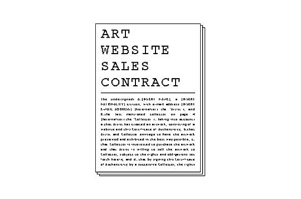
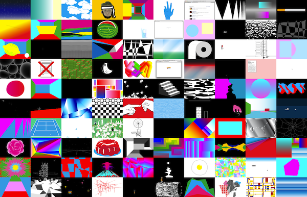
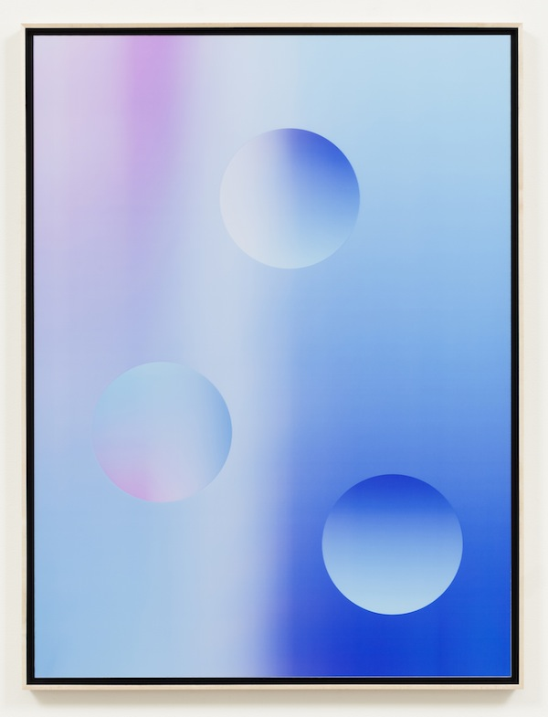

Drawing on over a decade of experience and more than 25 solo shows exhibited internationally, Rafaёl Rozendaal reflects on the social, economic, and aesthetic conditions that today characterize the landscape of internet-based art, in a conversation with Marvin Jordan.
The title of the following transcript, Abstract Browsing, is taken from Rozendaal’s latest project: a free Google Chrome plugin that turns any website into a colorful composition.
Marvin Jordan: From your experience as an internet-based artist, how do you feel that the traditional role of the artist — understood as some kind of solitary genius working alone or at the margins of society — how has that role changed in the contemporary context of digital networks? Rafaël Rozendaal: I think it’s even more solitary than before, because in the past it was the artist making work alone but still needing someone to give him or her permission to show the work. That middleman is now gone.
Rafaёl Rozendaal: I think the internet is a place for individuals to connect directly, and I’ve noticed that with internet artists there’s a lot of people who are not that good with social skills — and yet that’s why they excel; it’s for the shy people and the introverts. Because the art world today is — and maybe it has always been this way — it’s very social, it’s about who you know. Meanwhile, the internet is not about who you know, it’s just about what you want to make. So that whole thing of going to get an MFA and being with the right tutor and speaking to the right people, being friends with the critic, getting drunk together, all that stuff is not needed in the context of digital networks.
MJ: Right, but wouldn’t you say there’s an irony there? Due to the dissolution of this middleman — whether it’s your art advisor, your MFA mentor or teacher, etc. — when that disappears, a kind of redoubled responsibility emerges on the shoulders of the shy or “solitary artist”, because then you have to be your own manager or play the role of one’s own liaison—
RR: I don’t want to compare the traditional artist from the 1500s because that’s a bit too far of a reference. But let’s say you compare to the artists of the 60s, who were doing conceptual art. Conceptual art completely needs “art context” in order to be readable: if you put a urinal on the street, you don’t recognize it as a work of art, but if you put it in a gallery… etc. So it’s very much a matter of the artwork becoming more readable. And if it’s in a powerful institution, then the more it becomes art. The art world is a bit like a video game — you get to know people, you get some coins and then you get to go to the next level and then you get into the slightly bigger room with less furniture. At first you’re in the side room, then you’re in the main room, then you get in the magazine, etc. The rules are very set, you talk to this person, a biennale, then you get a gold star, then you get upgraded and get to speak to better curators – but then also the critics are harsher… So really it’s just like Super Mario.
MJ: That’s funny—
RR: So if you compare that to people who are actively going to dinners, hanging out with people, having a studio visit — which is a sort of religious ritual — and all the language involved in this, it’s like a secret society with a lot of secret handshakes. I think if you treat the web as a promotion tool, then it’s a chore; but if you treat it as a platform, if you say, “I’m not using Instagram to promote, I’m using it just to show what I’m doing, I’m just showing my sketches and I’m opening my studio to you.” That’s not really promotion — you’re just flipping the idea of a studio visit inside-out.
MJ: Right, so that’s where things get paradoxical but also very interesting — the question then becomes, to what extent can we separate the notion of the internet as “platform” or internet as tool for self-promotion…
RR: And then the self-promotion becomes the art…
MJ: Exactly, these things blur into each other. But once again it goes back to this age old question, the difference between medium and message and how they’re really inseparable, you know? There’s a contradiction at play where – exactly like you said – you have the sociology of the art world based on the kind of ‘Super Mario’ economy of getting coins and distinction, associating with the right people, etc. — that’s still very much at work today. But on the other hand, the internet has been – you guessed it – a disruptive force, all across different fields. So there is this network of exclusivity on the one hand, but on the other a kind of progressive disruption of this network and its accessibility.
RR: I think the question gets really complex when you have no definition of what art is. If you go by the definition of art that says art is whatever is shown in the institutions, in galleries and museums… for example, art critics don’t review websites, they review exhibitions. Things that happen outside of exhibition spaces are not considered art. But if you do consider things that happen outside of exhibition spaces art, and if you think that Super Mario (the game) is a work of art, or certain magazines, or if you think certain things happening on Tumblr are art...
MJ: Tumblr is a good example.
RR: Right, so a lot of people talk about democratizing art – but depending on your definition of art, it already happened. If you think cartoons are art, then there you go, that’s accessible art, accessible to everybody. You can view it anytime you want at home, and it’s distributed around the world for a small price. If you think Mickey Mouse is art, then democratization of art already happened; if you think only what is shown in museums is art, then democratization will never happen. So it’s kind of a ‘catch 22’: it depends on what you consider is art, where the boundaries are. Because if you think that whatever is shown in institutions is art and is going to be part of art history, then that’s based on gatekeepers, because if they’re open then they’re not considered an
institution. I think that is the big key difference: that the internet is completely open, that’s the only real difference.
MJ: Yes, and that begs the question: to what extent do these disciplines — such as History with a capital H, or Art History, and the notion of “the canon,” etc. — actually depend fundamentally on gatekeepers, on authority, whether its academic authority, “expertise,” etc. The notion of an artist being legitimized by an authority (and to some extent depending on it) creates interesting questions for art that seeks primarily to “provoke.”
RR: It’s an interesting thing for me if you think of art as just units of information. Traditionally those units were tied to a physical object and were guided by gatekeepers and they restricted access so they would make the decisions – in this sense the gatekeepers guide people. But now you can have a unit of information that anyone might put online and might even get copied and mutated by others and it lives a life of its own – and that’s very different. The interesting thing for me is that on the internet you will encounter things that you’re not sure where they came from, you’re not even sure if it was intended as art in the first place.
MJ: Right, this touches on a question that we can get to later or now but, the notion of the art object as an irreducibly physical thing.
RR: That’s a very Western idea.
MJ: How so?
RR: The Japanese had a tradition of woodblock print by which they were sold for very little money — for the price of a bowl of noodles — so that everybody could have a copy of the print, and the originals were eventually lost, so they didn’t even care about them; just like we wouldn’t care about owning the master tape of a movie, we just want to see the movie. It’s all about non-physical images in a similar way. I think ceramics were more high end and they were more precious, so they sent ceramics to Europe at some point when they started mutually trading, and they wrapped them in the woodblock prints. They used that as wrapping paper; and when the Europeans opened the box, they found the wrapping paper more interesting than the ceramics, and started saying calling it art. The Japanese hadn’t thought of it that way. That’s what I mean it’s a very Western thing to say.
MJ: So following from this Western-centric fixation on the original “master copy” of the artwork, we’re touching on a critical question at the heart of the net art economy — the question of scarcity, or the production of artificial scarcity. How do you create value in a post-scarcity market?
RR: Let’s take the example of movies. I think children are growing up today with way more moving images than previous generations. So maybe in the beginning of cinema, people were used to seeing five movies in their whole lifetime, whereas now you’re used to everything being in animated form – even an emoji can be animated. So the simple act of saying hello to someone can be an animated, moving image. The idea of the moving image has become much broader now, to the point where we see it altogether separate from narrative, and this eludes the limits of scarcity too. The moving images are seen isolated on their own, and what happens there is that they cease to be objects.
The ironic thing is that all scarcity today seems unofficial — there is way more food than we can eat, for example. It just isn’t distributed evenly. So it’s not like we’re really running out of bread or whatever. It’s more like people create the scarcity, where... I don’t know if it’s true for everything.
MJ: There are definitely exceptions, but I think here we come to an interesting crossroads where there are companies, startups like Monegraph, for example, that are trying to create artificial scarcity in the net art economy by creating exactly this kind of “master copy”, purely out of a certificate of ownership – i.e. out of virtual thin air. This model of an “original” that comes after the copyable, of scarcity as an effect of ownership (and not the reverse) — this is being applied to an art form that has existed
perfectly well in post-scarce environments, reproducing itself freely across hundreds of blogs. You yourself have designed and experimented withinternet art contracts in the past, so what’s your take on all this?
RR: Well for me, just creating scarcity was not enough, so my approach focuses primarily on domain names — which serve many purposes — and it’s not just a financial thing. When it comes to the domain name, for me, the main thing is that you can create a lot of variations with digital files. So while you’re working, your photoshop file will exist in lots of iterations — version 7a, version 7b, version 93 — and it just never feels finished. I like the idea of the domain name because it’s fixed, it’s done, and it will exist there forever, rather than it being a file on someone else’s server, on a tumblr or somewhere – no, this is a finished thing. It’s a bit like a frame around a painting, whereby you say: “this is done, it’s not a sketch, I’m really hanging this.” And the other thing is that it makes its location permanent so you’ll always find it there. Most people’s computers are a huge mess and full of unfinished
things, so I like the idea of the domain name as a finished and fixed product. Those were the most important reasons. Then, I also like the idea that it’s a language thing but it’s also an IP address, so it’s almost like a magic spell whereby you can say this one sentence, “dot com”, and the artwork suddenly appears in front of you. These things have nothing to do with money. In the end it’s also cool that domain names are scarce and that makes them sellable. It’s important to me that that’s at the end because if it makes things more complicated — rather than more fun — then it’s not going to work. In my case, a domain name adds to the work, it’s first and foremost a part of the work. Then the fact that you can monetize it is a secondary matter, and it does make it interesting, but that’s not the point. Scarcity in and of itself is not interesting.
MJ: It’s not enough.
RR: Also I didn’t create the scarcity of domain names – that’s a real thing. I didn’t create artificial scarcity. The reason domains are scarce is because we only have so many words we can remember. I had discussion with internet artists who were operating more so in a blog form, either Twitter or Instagram, and they thought that the domain name is convoluted and makes things complicated, that it goes against the nature of the web, because the web is more about temporality. But I think a lot of things exist meaningfully on the internet for a long time: there are many iconic webpages like the End of the Internet page.